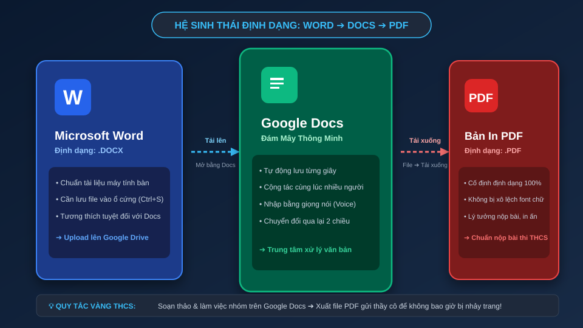
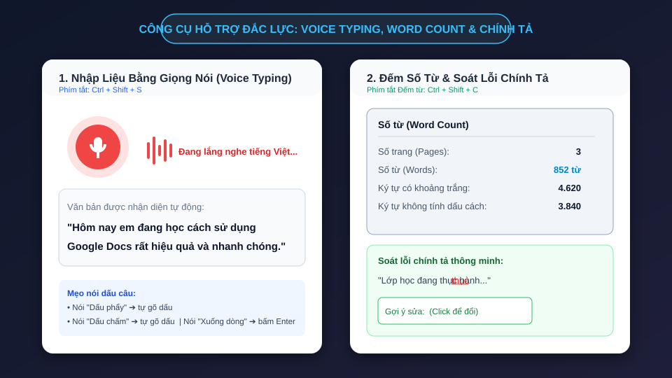
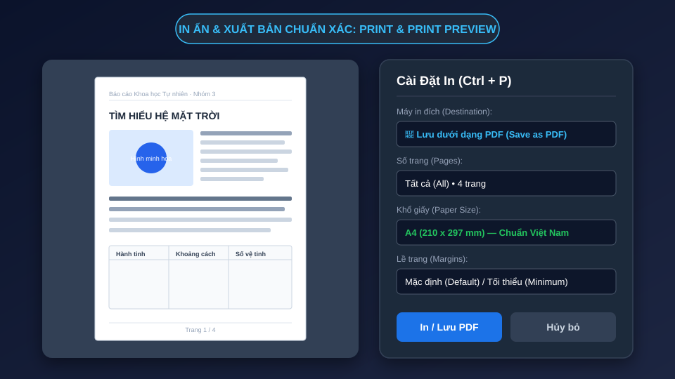
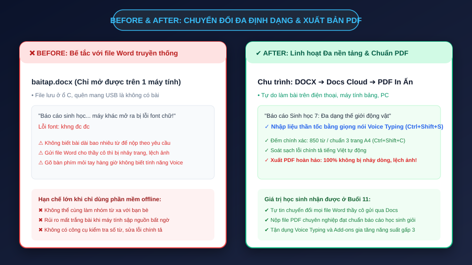

Chinh phục cây cầu nối giữa Microsoft Word (.docx) và Google Docs! Làm chủ nghệ thuật xuất bản PDF chuẩn in ấn không bao giờ bị lệch trang, cùng bộ ba quyền năng: Voice Typing nói thành văn bản, Đếm từ chuẩn bài thi và Offline Mode.
Học sinh thành thạo kỹ năng chuyển đổi tài liệu và công cụ trợ lực kỹ thuật số:
Mỗi định dạng sinh ra đều có một sứ mệnh đặc thù trong học tập và công việc:
Định dạng truyền thống máy tính bàn
Trung tâm soạn thảo đám mây
Định dạng vàng khóa trang nộp bài
Quan sát mô hình chuyển đổi 2 chiều linh hoạt không giới hạn thiết bị.

Không cần cài đặt Microsoft Office đắt tiền, em vẫn mở và chỉnh sửa file Word hoàn hảo:
Mở drive.google.com ➔ Kéo file .docx từ máy tính thả thẳng vào màn hình Drive.
Nhấp đúp vào file ➔ Chọn "Mở bằng Google Tài liệu" trên đầu màn hình.
Google Docs tự động chuyển đổi sang giao diện trực tuyến mà vẫn giữ nguyên thẻ đuôi .DOCX!
Thực hiện thao tác nhận và giải cứu file Word từ thầy cô:
Tình huống: Thầy giáo gửi file baitap.docx qua Zalo/Email lớp.
Học sinh thao tác:
1. Tải file về máy ➔ Tải lên Google Drive.
2. Mở file bằng Google Docs.
3. Sửa câu: "Hôm nay trời nhiều mây." thành "Hôm nay trời thu Hà Nội rất trong xanh."
4. Quan sát: Biểu tượng .DOCX màu xanh dương xuất hiện cạnh tên tài liệu báo hiệu tương thích chuẩn!
Google Docs hỗ trợ xuất ra nhiều định dạng chuyên dụng tùy mục đích sử dụng:
Microsoft Word để gửi người chỉ dùng Office.
Tài liệu PDF khóa trang chuẩn in ấn và nộp bài.
Sách điện tử đọc trên máy Kindle, iPad.
Văn bản thuần hoặc trang web nén dạng zip.
Hiểu được bí quyết này sẽ giúp bài báo cáo của em luôn đạt điểm tối đa phần trình bày:
Trải nghiệm xuất bản tài liệu chuẩn công nghiệp:
1. Trên Google Docs, bấm Tệp ➔ Tải xuống ➔ Tài liệu PDF (.pdf).
2. Mở file PDF vừa tải về trong trình duyệt Chrome.
3. Đặt cửa sổ Google Docs và cửa sổ PDF cạnh nhau:
• Thử bôi đen, xóa chữ trên PDF ➔ Không xóa được!
• Cuộn trang quan sát: Hình ảnh và ngắt trang giữ chuẩn xác đến từng milimet!
Được Google hỗ trợ AI nhận diện tiếng Việt cực kỳ chính xác. Phím tắt: Ctrl + Shift + S.
Vào Công cụ ➔ Nhập liệu bằng giọng nói hoặc bấm Ctrl + Shift + S. Chọn ngôn ngữ Tiếng Việt.
Bấm vào biểu tượng Micro, chọn "Cho phép" (Allow) khi trình duyệt hỏi quyền sử dụng micro máy tính.
Đọc rõ ràng: Nói "Dấu phẩy" ra dấu ,; nói "Dấu chấm" ra dấu .; nói "Xuống dòng" để qua đoạn mới!
Khám phá tốc độ gõ bài bằng giọng nói của em:
Thao tác: Nhấn Ctrl + Shift + S, thấy icon mic chuyển sang màu đỏ rực thì đọc câu sau:
"Hôm nay em đang học cách sử dụng Google Docs dấu chấm Thật là kỳ diệu xuống dòng Em có thể đọc bài văn dài mà không hề mỏi tay dấu chấm"
💡 Quan sát màn hình xem Google Docs tự ngắt dấu chấm và xuống dòng chuẩn xác thế nào nhé!
Bộ 3 công cụ giúp học sinh THCS hoàn thiện bài viết nhanh hơn và chuẩn mực hơn.

Đề bài yêu cầu: "Viết bài văn nghị luận xã hội khoảng 400 đến 600 từ". Làm sao để biết chính xác?
Bấm Ctrl + Shift + C (trên Mac: Cmd + Shift + C). Bảng thống kê lập tức hiện ra:
Tick vào ô "Hiển thị số từ khi nhập" (Display word count while typing). Một đồng hồ đếm từ nhỏ sẽ gắn ở góc dưới bên trái màn hình, tự động nhảy số theo từng chữ em gõ!
Tự động phát hiện lỗi đánh máy, lỗi thiếu dấu và gợi ý sửa chỉ với 1 click chuột:
Khi em gõ sai chính tả (ví dụ: "học xinh"), Google Docs sẽ gạch chân gợn sóng màu đỏ cảnh báo.
Cảnh báo lỗi ngữ pháp hoặc dùng từ chưa chuẩn trong ngữ cảnh câu (ví dụ: lặp từ quá nhiều).
Nhấn phím F7 hoặc vào Công cụ ➔ Chính tả và ngữ pháp để duyệt sửa từng từ một.
Đừng bao giờ bấm In ngay khi chưa xem trước! Phím tắt kinh điển: Ctrl + P.
Nếu chỉ cần in bản nháp đọc thử, em có thể chọn in 2 trang trên 1 mặt giấy (2 pages per sheet) hoặc in hai mặt (Print on both sides) để bảo vệ môi trường!
Xem trước từng trang và xuất bản file PDF bằng tính năng máy in ảo.

Nhiều bạn nghĩ Google Docs không có mạng Internet là vô dụng — Đó là một hiểu lầm lớn!
Cài extension Google Tài liệu Ngoại tuyến trên trình duyệt Chrome.
Vào Tệp ➔ Cho phép sử dụng khi không có mạng trên tài liệu của em.
Em cứ gõ bài bình thường khi mất mạng. Vừa có lại wifi, mọi thay đổi tự động đồng bộ lên Drive!
Giới thiệu kho tiện ích phong phú từ Google Workspace Marketplace:
Gõ công thức Toán học, Vật lý phức tạp như căn bậc hai, tích phân, phân số cực đẹp.
Chèn hàng ngàn biểu tượng icon sinh động trực tiếp vào tài liệu mà không cần tải về máy.
Dịch toàn bộ bài báo cáo sang tiếng Anh hoặc dịch ngược lại chỉ sau đúng 1 giây.
Bấm các nút bên dưới để trải nghiệm chuyển đổi định dạng và công cụ trợ lực:
So sánh quy trình làm bài lạc hậu và chu trình công nghệ số hiện đại.

Học sinh hoàn thiện toàn diện chu trình xử lý đa định dạng trong 25 phút:
baitap_khoahoc.docx từ giáo viên.Giáo viên cung cấp một file văn bản mẫu vanban_thcs.docx:
Mở trên Docs, chỉnh sửa câu chữ, định dạng lại font Arial/Roboto cỡ 12, cách dòng 1.25.
Chèn thêm 1 hình ảnh chất lượng cao minh họa cho nội dung bài viết.
Tải xuống 01 file .docx và 01 file .pdf. Nộp cả 2 file lên hệ thống học tập của lớp.
3 tổ hợp phím giúp em tiết kiệm hàng chục phút mỗi ngày:
Ctrl + P
Mở hộp thoại Print Preview
Ctrl + Shift + C
Xem số trang, số từ tức thì
Ctrl + Shift + S
Bật Micro Voice Typing
10 câu hỏi kiểm tra độ am hiểu công nghệ của em: